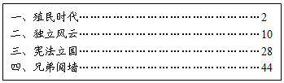
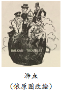

2019年北京市中考历史试题 · 选择题 第21、22、23、24、25题
21．（1.5分）如图是《大国崛起》丛书中某册的部分目录，这册书介绍的是（ ）

A．法国B．美国C．俄国D．日本
22．（1.5分）近代自然科学的殿堂中群星璀璨。以下人物应列入其中的是（ ）
①牛顿
②贝多芬
③巴尔扎克
④达尔文
A．①②B．②③C．③④D．①④
23．（1.5分）19世纪中期的一部著作阐明了社会发展的客观规律，论证了被剥削的无产者不断壮大，将用暴力推翻资本主义制度，未来属于工人阶级。这部著作是（ ）
A．《人权宣言》B．《共产党宣言》
C．《解放黑人奴隶宣言》D．《联合国家宣言》
24．（1.5分）如图漫画原图发表于1912年，桶上英文意为“巴尔干麻烦”，桶盖将被蒸汽顶起，上面的人物代表英、法、德、奥匈、沙俄等国。漫画可以说明（ ）

A．第一次世界大战的背景B．凡尔登战役的空前惨烈
C．欧洲的优势地位被剥削D．巴黎和会上的勾心斗角
25．（1.5分）1932年美国总统竞选期间，罗斯福提出下列施政主张，说明他准备（ ）
*稳定金融，限制股票、证券发行
*约束、控制经济寡头
*监管公共事业的控股公司
*援助铁路运输业
A．继续实行“自由放任”的政策
B．通过扩军备战促进经济复苏
C．运用政府权力干预经济发展
D．利用过剩物资救济失业家庭